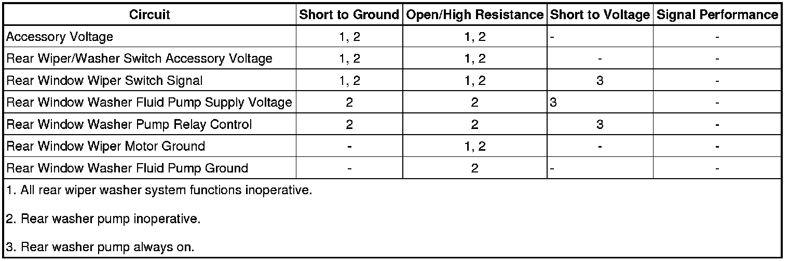

Rear Wiper System Malfunction
Rear Wiper System Malfunction
Diagnostic Instructions
* Perform the Diagnostic System Check - Vehicle (Initial Inspection and Diagnostic Overview) prior to using this diagnostic procedure.
* Review Strategy Based Diagnosis (Initial Inspection and Diagnostic Overview) for an overview of the diagnostic approach.
* Diagnostic Procedure Instructions (Initial Inspection and Diagnostic Overview)provides an overview of each diagnostic category.
Diagnostic Fault Information

Circuit/System Description
The rear wiper is controlled based on an input from the rear wiper/washer switch. When closed, the wiper ON and wiper DELAY switches provide a unique voltage signal to the rear window wiper motor indicating the desired speed. Each switch has a unique resistor that drops the voltage to a specified value which is interpreted by the rear window wiper motor as ON or DELAY. The rear wiper motor receives accessory voltage from the ACCY WPR fuse located in the underhood fuse block .
Reference Information
Schematic Reference
Wiper/Washer Schematics ([1][2]Electrical Diagrams)
Connector End View Reference
Component Connector End Views (Connector Views)
Description and Operation
Wiper/Washer System Description and Operation (Wiper/Washer System Description and Operation)
Electrical Information Reference
* Circuit Testing (Component Tests and General Diagnostics)
* Connector Repairs (Component Tests and General Diagnostics)
* Testing for Intermittent Conditions and Poor Connections (Component Tests and General Diagnostics)
* Wiring Repairs (Component Tests and General Diagnostics)
Scan Tool Reference
Control Module References (Programming and Relearning)for Scan Tool Information
Circuit/System Verification
1. Command the rear wiper ON using the rear wiper switch. The rear wiper should activate.
• If the rear wiper does not activate, refer to Rear Wiper Circuit/System Test.
2. Command the delay rear wiper ON using the rear wiper delay switch. The rear wiper should activate in the delay mode.
• If the delay rear wiper does not activate, refer to Rear Wiper Delay Circuit/System Test.
Circuit/System Testing
Rear Wiper Circuit/System Test
1. Ignition OFF, disconnect the harness connector at the rear wiper/washer switch.
2. Ignition ON, verify a test lamp illuminates between the accessory circuit terminal 5 and ground.
• If the test lamp does not illuminate, test the accessory circuit for a short to ground or an open/high resistance.
3. Ignition OFF, connect the harness connector at the rear wiper/washer switch. Disconnect the harness connector at the rear window wiper motor.
4. Verify that a test lamp illuminates between the ground circuit terminal E and B+.
• If the test lamp does not illuminate, test the ground circuit for an open/high resistance.
5. Ignition ON, verify a test lamp illuminates between the accessory voltage circuit terminal B and ground.
• If the test lamp does not illuminate, test the accessory voltage circuit for an open/high resistance.
6. Rear wiper switch in the ON position, test for B+ between the signal circuit terminal C and ground.
• If less than the specified value, test the signal circuit for an open/high resistance. If the circuit tests normal, test or replace the rear wiper/washer switch.
7. If all circuits test normal, replace the rear window wiper motor.
Rear Wiper Delay Circuit/System Test
1. Ignition OFF, disconnect the harness connector at the rear window wiper motor.
2. Rear wiper switch in the DELAY position, test for B+ between the signal circuit terminal C and ground.
• If less than the specified value, test the signal circuit for an open/high resistance. If the circuit tests normal, test or replace the rear wiper/washer switch.
3. If all circuits test normal, replace the rear window wiper motor.
Component Testing
Rear Wiper/Washer Switch
1. Ignition OFF, disconnect the harness connector rear wiper/washer switch.
2. With the rear wiper switch in the OFF position, test for infinite resistance between the accessory voltage terminal 5 and the signal terminal 3.
• If not the specified value, replace the rear wiper/washer switch.
3. With the rear wiper switch in the ON position, test for 2700-3300 ohms of resistance between the accessory voltage terminal 5 and the signal terminal 3.
• If not within the specified range, replace the rear wiper/washer switch.
4. With the rear wiper switch in the DELAY position, test for 900-1100 ohms of resistance between the accessory voltage terminal 5 and the signal terminal 3.
• If not within the specified range, replace the rear wiper/washer switch.
Repair Instructions
Perform the Diagnostic Repair Verification (Verification Tests) after completing the diagnostic procedure.
* Rear Window Wiper and Washer Switch Replacement (Service and Repair)
* Liftgate Wiper Motor Replacement (Liftgate Wiper Motor Replacement)